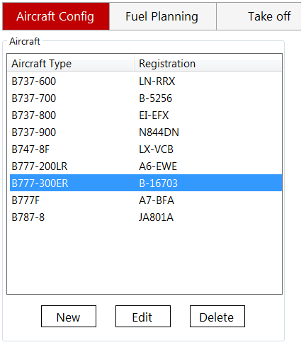
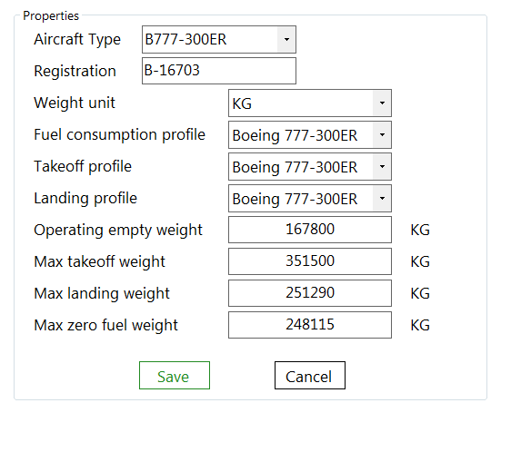
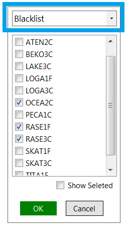
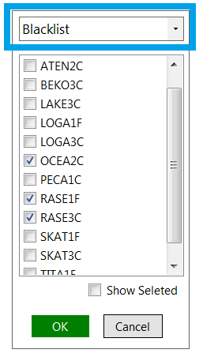
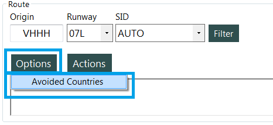
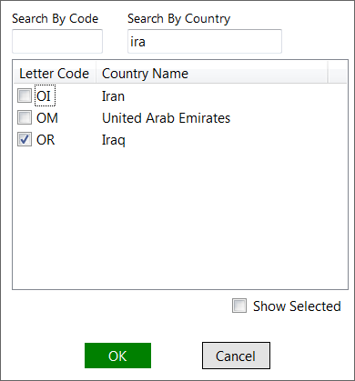

QSimPlanner Manual
Aircraft Config
From the aircraft configuration menu, you can add/edit/delete a profile.
After clicking "edit", various properties can be set. Fuel consumption, takeoff and landing profiles can be set to "None". However, if the fuel consumption profile is "None", that aircraft will not appear in fuel planning page. Takeoff/landing profiles are similar.
 Flight planning
This is where the route planning and fuel calculation is done.
SID/STAR filter, route options
The route finder comes with a SID/STAR filter. There are 2 modes, blacklist and whitelist.
 

It's possible to avoid finding a route passing through certain countries.
 Route actions
The actions menu contains 4 items:
Find route
Automatically finds the shortest route between the two airports. The SID/STAR filters, avoided countries, and current oceanic tracks are taken into consideration.
Analyze route
Read the route text and analyze it. The allowed format is SID Waypoint Airway Waypoint ... Waypoint STAR.
The SID and STAR are optional. Any SID/STAR/Airway can be replaced with DCT(direct), AUTO(finds the route between the two waypoints automatically) or RAND(find a random track between the two waypoints). Any waypoint can be replaced with a coordinate, for example, 50E30, N30W070, or S20.35E12.335. Note that the departure and arrival airports/runways need to be entered correctly. Also all DCT can be omitted.
For example, this route (from KLAS to KLAX) has correct format:
MCCRN4 WHIGG V21 HEC BASET3.HEC
We can let the route finder get the shortest path from WHIGG to HEC by replacing the airway with AUTO:
MCCRN4 WHIGG AUTO HEC BASET3.HEC
Or even let it find the SID for us:
AUTO HEC BASET3.HEC
Another example is a route from PANC to PHNL. We can use RAND to find a random track between waypoints, i.e. a series of latitude/longitude coordinates or waypoints.
ANCHO8 TED RAND ZIGIE KAENA2.ZIGIE
Or, if we do not know the SID and STAR to use, simply enter:
RAND
Click "Analyze Route" and then we get:
ANCHO8 TED 61N50 50N50 39N50 29N55 ZIGIE KAENA2.ZIGIE
Show map
Plot the route found or analyzed with Google Map.
Export
Export the route found or analyzed as a flight plan file, as set in options.
Advanced tool
The advanced tool can find or analyze routes which are:
- From airport to airport
- From airport to waypoint
- From waypoint to airport
- From waypoint to waypoint
Fuel Parameters
- Missed approach: Fuel consumption for one missed approach. This depends on the type of aircraft and missed approach procedure.
- Contingency: The percentage of (Trip fuel + Missed approach fuel). This is required by regulations.
- Holding: Estimated holding time at destination airport. This may be due to bad weather, heavy traffic, or any other factors.
- Extra: Fuel added at your (captain's) discretion.
- APU: Estimated APU time.
- Taxi: Enter the estimated taxi time.
- Final reserve: Time to hold 1500 feet above alternate airport. This is not used unless in an emergency. Usually 30 or 45 minutes, depending on the policy.
Fuel report
An example of fuel report:
ALL WEIGHTS IN KG
FUEL TIME
TRIP 54873 0723
CONTINGENCY 2743 0022
HOLD 0 0000
EXTRA 0 0000
ALTERNATE 3632 0028
FINAL RSV 3000 0030
AT T/O 64249 0843
APU 120 0030
TAXI 720 0020
TOTAL 65089 0933
FMC RSV 6.0
The items in the report are:
- Trip: Estimated fuel consumption from origin to destination
- Contingency: Amount of contingency fuel
- Holding: Amount of holding fuel
- Extra: Amount of extra fuel
- Alternate: Estimated fuel consumption from destination to alternate
- Final rsv: Amount of final reserve fuel
- APU: Estimated APU time.
- Taxi: Enter the estimated taxi time
- Total: Total fuel to add into fuel tanks
- FMC rsv: Value to enter into "RESERVES" in FMC.
Options
Flight plan export
You can set the folder which the flight plan file exports to. If the checkbox on the left indicates whether that item is export when "Export" is click in Route Actions.
Route
- Use wind-optimized route: Enable route finder uses wind aloft to determine the shortest route.
- Hide 'DCT' in route output: Omit all 'DCT'.
- Show track ident only: The route shows only name of the oceanic track instead of all waypoints of that track.